Թեստ 27
30:00
1. «Ճանապարհային երթեւեկության անվտանգության ապահովման մասին» ՀՀ օրենքի համաձայն՝ տրանսպորտային միջոցի վարորդը պարտավոր է ճանապարհատրանսպորտային պատահարին առընչություն ունենալու դեպքում՝
2. «Ճանապարհային երթևեկության անվտանգության ապահովման մասին» ՀՀ օրենքի համաձայն` ճանապարհի երթևեկելի մաս է համարվում`
3. Կողային կցորդով մոտոցիկլների շահագործումն արգելվում է, եթե`
4. Տրանսպորտային միջոցների շահագործումն արգելվում է, եթե`
5. Ո՞ր տրանսպորտային միջոցի վարորդն ունի առաջնահերթ երթևեկության իրավունք:
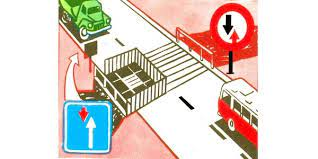
6. Նշաններից ո՞րն է կոչվում «Հյուրանոց» կամ «Մոթել»:
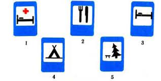
7. Տրանսպորտային միջոցները խաչմերուկը կանցնեն հետևյալ հերթականությամբ՝
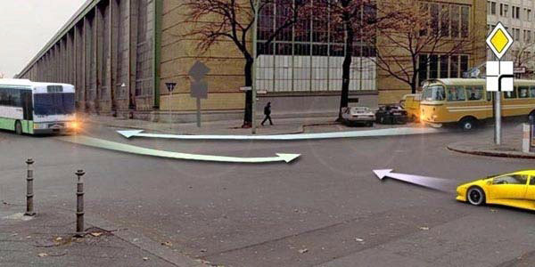
8. Վարորդներից որն է պարտավոր կանգ առնել:
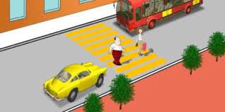
9. Կահավորված թափքում մարդ փոխադրող բեռնատար ավտոմոբիլների երթևեկությունը թույլատրվում է ոչ ավելի քան`
10. Առանց ծածկույթի հողային ճանապարհի վրա, անմիջապես խաչմերուկից առաջ, ծածկույթով հատվածի առկայությունն արդյոք այդ ճանապարհը դարձնու՞մ է հատվողին հավասարազոր:
11. Ո՞ր հետագծով է թույլատրված աջ շրջադարձը
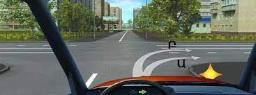
12. Նշաններից որով է կահավորվում արհեստական անհարթությունը
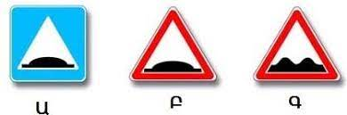
13. Տրանսպորտային միջոցները խաչմերուկը կանցնեն հետևյալ հերթականությամբ՝
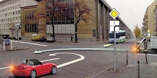
14. Ի՞նչ առավելագույն արագությամբ է թույլատրվում թեթև մարդատար ավտոմոբիլների երթևեկությունը այս ճանապարհային նշանի ազդեցության ճանապարհահատվածներում:
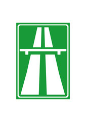
15. Ո՞ր հետագծով է թույլատրվում հետադարձ կատարել
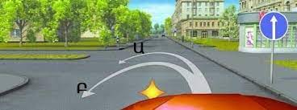
16. Այս իրադրությունում զիջել պարտավոր ենք
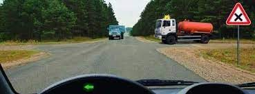
17. Խաչմերուկն ուղիղ անցնելիս
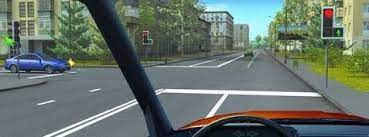